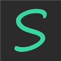

從斷食出發的飲食紀錄 app · Android
這是一支從斷食出發的飲食紀錄 app。
我們只記錄、不評價,陪你留住每一個美好的當下。
在自我覺察的路上,和你一起慢慢長大。
斷食不該是焦慮的數字遊戲。SportRecorder 從斷食出發,但真正想做的是:用輕鬆的記錄, 讓你意識到自己到底吃了什麼,進而更關注健康與生活。我們相信覺察先於改變,而覺察來自溫柔地看見自己, 不是被打分數。
資料預設只留在你的裝置上。進食紀錄、備註、照片與地點都存在手機本機, 我們沒有任何接收你資料的伺服器,App 也不含廣告或分析追蹤。
只有在你主動開啟「備份與還原」並以 Google 登入之後,資料才會上傳到你自己的
Google 雲端硬碟中一個專屬於本 App 的隱藏資料夾(drive.appdata 權限範圍)。
這個權限無法讀取你雲端硬碟裡的其他檔案,備份是由你的裝置直接送往你的 Google 帳號,
不會經過我們。
套件名稱:com.crazystudio.sportrecorder
問題、建議或隱私相關詢問,請來信 aidan79225@gmail.com。
SportRecorder is a fasting-rooted food diary for Android. It records, it never judges — it is here to help you hold on to each good moment, and to notice your own patterns gently.
Your data stays on your device by default. We operate no server that receives it,
and the app has no ads or analytics. If you turn on Backup & restore, the app uses only the
drive.appdata scope, which can read and write a hidden folder belonging to this app
and cannot see any other file in your Drive. Backups go straight from your device
to your own Google account.